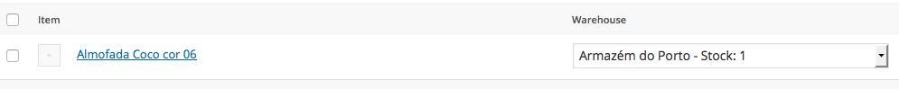
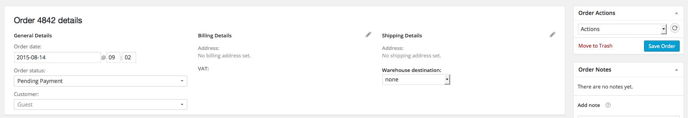
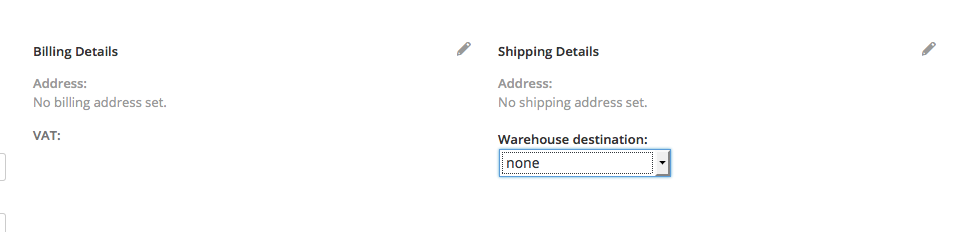

By: Hellodev
Email: hi@hellodev.us
Thank you for purchasing this plugin. If you have any questions that are beyond the scope of this help file, please feel free to email us.
This plugin adds the following features to WooCommerce:
The manual installation method involves downloading this plugin and uploading it to your webserver via your favourite FTP application. The WordPress codex contains [instructions on how to do this here].
To add your warehouse you need to select Warehouses > Add Warehouse. Fill the form with all the information and press "Save Warehouse" to store it. If you want to use frontend stock reduction priorities please read this part of the documentation.
The list of all the warehouses is available in Warehouses > Warehouses. The list view shows all the info about the warehouses. To edit press the Warehouse ID number, it will take you to the edit page.
This feature is handled inside the product tab. You need to go to Products > Products > Select a product to edit > Product Data > Inventory > Warehouse Stocks Plugin Options - List of warehouses to manage the inventory stock of your product.
If it is a variation, you need to go to Products > Products > Select a product to edit > Product Data > Variations > Select the variation you desire > Warehouse Stocks Plugin Options - List of warehouses.
The total stock amount between all warehouses is handled by this plugin. You do not need to worry about this.
This feature is handled inside the product tab. You need to go to Products > Products > Select a product to edit > Product Data > Inventory > Warehouse Stocks Plugin Options - List of warehouses to manage the inventory stock of your product.
If it is a variation you need to go to Products > Products > Select a product to edit > Product Data > Variations > Select the variation you desire > Warehouse Stocks Plugin Options - List of warehouses.
The total stock amount between all warehouses is handled by this plugin. You do not need to worry about this.
This can be done with the normal usage of your WooCommerce installation. Here is an example: you go to WooCommerce > Products > Add Order. Adding a product to the current order will show you a Warehouse dropdown list with the warehouse name and the corresponding stock of this product. You select the desired warehouse and fill the order parameters like you do in a regular order. When you press the Save Order button, your order will be saved. You do not need to worry about stock decrease, this plugin will handle that for you.
Example of the warehouse dropdown per product line: 
The "Save Order" button is placed under "Order Actions": 
Warehouse to warehouse stock transfer is also important in some business models. This plugin handles this transfers using WooCommerce Order System. To transfer stocks from a warehouse to another warehouse you just need to place an Order. You can do this by going to WooCommerce > Products > Add Order. After that you will be prompt with the order form, add the products you want to move and select the origin warehouse by filling the Warehouse field for each product line.
This is where the destination warehouse is selected: 
The destination warehouse can be selected with the dropdown in the image above. When you press "Save Order" your order will be saved, again you do not need to worry about stock increase or decrease for each warehouse, this plugin handles that for you.
Please note that this plugin also grabs the warehouse address and puts it in the order shipping address. When you select a destination warehouse the shipping and billing addresses are locked to avoid issues.
Priorities can be defined globally when you add a warehouse. You can define a global priority number, or a priority number per item. There is a field next to the stock amount for you to set the particular priority that will override the globally set priorities. Frontend stock usage priority will respect this rules automatically.
This feature is available under the tab Warehouses > Stock Log. It saves the following changes:
This feature is available under the tab Warehouses > Stock Report. It allows you to do the following:
In some business models it is important that you are able to select when you want to see your stock being decreased. This plugin allows you to control this with the WooCommerce order status. To select when you want to see your stock reduced go to Warehouses > Plugin Settings > Woocommerce Stock Reduction State then press Save Settings to store your settings.
List of order status supported:
The access to the features is controlled by the user capabilities. This plugin is available to every user that owns manage_options capabilities. However there are another two set of capabilities if you want to control it in gerater detail. Use hellodev_im_stock_log to control who can access the stock log and report. Use hellodev_im_manage_warehouses to allow users to modify your warehouses. Use hellodev_im_plugin_settings if you want to allow users to modify the plugin settings.
This plugin has been developed by Hellodev. You can check our website at here.
This plugin works with WooCommerce eCommerce solution, a product of WooThemes.
Hellodev
Rua Humberto Cruz 410
4450-694 Leça da Palmeira
PORTUGAL